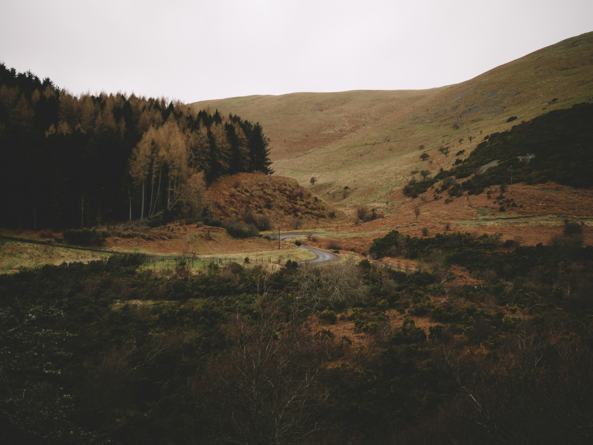

Perfumes · Pear · Eucalyptus · Cedar
Olden
A freshly ripened autumn pear, a glass of crystal cider.
£49.00 GBP
Buy on koroperfumes.comNatural eau de parfum · Made in small batches · Free UK shipping over £120
Details
Olden is the smell of an old orchard in October: pears just ripe enough to fall, cool leaves underfoot and a glass of something sparkling on the table.
Bright and juicy at first, it settles into soft wood and amber. Light enough for every day, with a long, quiet finish.
‘tastes like a freshly ripen autumnal pear, with a glass of crystal cider or champagne.’
A KORO customer
Perfumer’s notes
We made Olden after a walk through a neglected pear orchard in South England. The fruit was small, speckled and impossibly fragrant. We wanted the perfume to keep that honesty: ripe, slightly green, and a little bit wild.
Top notes
- Pear Accord Pyrus communisJuicy and sparkling
- Green Mandarin Citrus nobilisFresh and bright
- Eucalyptus Eucalyptus globulusCool and clean
Heart notes
- Osmanthus Osmanthus fragransApricot-like and silky
- Rose Rosa damascenaSoft and petalled
Base notes
- Atlas Cedarwood Cedrus atlanticaDry and woody
- Benzoin Styrax benzoinWarm and creamy
Materials
Composed from essential oils, absolutes, natural isolates, CO2 extracts and tinctures made in our studio. Natural materials vary from batch to batch, so colour and nuance may shift slightly over time. Full ingredient list on the product page at koroperfumes.com.
Shipping & care
Each batch is made fresh. Please allow 3–5 working days for dispatch. Keep away from direct sunlight and heat; apply to pulse points and let it settle for a few minutes.